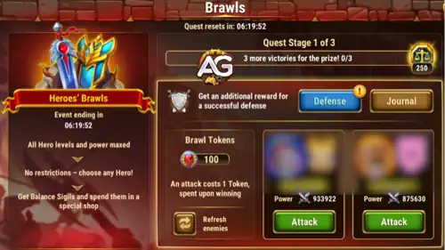

Balance of Power is a seven-day, Monday-to-Sunday event group focused on upgrading the featured faction and Hero while collecting Balance Sigils. The three linked events reward your wider roster too, so the strongest plan is to match every flexible action with the same action in Guild VS.

A Rotating Monthly Event Group
The featured faction, main Hero, Soul Stones, skins, Talisman, red equipment, Artifact, Relic Shards, and Event Shop stock can change when Balance of Power returns. This guide therefore explains the permanent strategy by mission type. Names such as Tristan, Cornelius, Kendle, Miu, Orm, Alecto, Oya, Jhu, Alvanor, and Lian describe the supplied season snapshot, not a guaranteed future lineup.
Balance of Power Guides


Heroes' Brawls and Extra Balance Sigils
Heroes' Brawls is both an additional source of Balance Sigils and a safe testing mode. All Hero levels and power are maximized, there are no Hero restrictions, and you can build teams with Heroes you have not fully upgraded on your account.

- Attack: each attempt costs a Brawl Token, which is spent when you win. Complete the displayed victory stages to collect Balance Sigils.
- Defense: set a strong defensive team because a successful defense can provide an additional reward.
- Testing: use the mode to experiment with teams at maximum Hero level and power before investing resources on your account.
- Daily reset: check the quest timer and finish useful stages before the current Brawl quest resets.
Alexandre's Quick Strategy
- Before Monday: save Energy, Elemental Spheres, Rune Stones, Hero Skin Stones, Titan Potions, Artifact resources, and featured-Hero upgrades.
- Do not miss daily resets: most Defiant Edge chains reset every day. Complete affordable stages daily instead of saving the entire chain for one day.
- Wednesday: make the largest Energy push.
- Thursday: spend Rune Stones, fight in Grand Arena, and perform flexible featured-Hero upgrades.
- Friday: spend Hero Skin Stones and use Summoning Circle summons.
- Saturday: use Titan Potions, defeat Realm bosses, open Tower chests, and perform Artifact evolutions that use Chaos Cores.
- Sunday: Guild VS is inactive. Claim the seventh login and finish only event goals or daily stages you cannot move.
Best Monday-to-Sunday Resource Plan
| Day | Best Balance of Power Actions | Guild VS Value |
|---|---|---|
| 1 — Monday | Open saved Elemental Spheres; fight in Arena; defeat a Realm boss; spend Sparks of Power on the featured Hero's Gift of the Elements. | 1,200 per Elemental Sphere; 6,000 per Arena fight; 850 per boss; 30 per Spark of Power. |
| 2 — Tuesday | Complete affordable daily Hero Skin Stone and Titan Potion tiers; open Tower chests; use featured-Hero Artifact fragments. | 700 per 15 Hero Skin Stones; 150 per 100 Titan Potions; 4,000 per Tower chest; 1,200 per Artifact fragment. |
| 3 — Wednesday | Best Energy day. Spend the largest daily Energy amount; open Tower chests; equip featured-Hero items or spend Artifact fragments. | 100 per 3 Energy; 4,000 per Tower chest; equipment scores by color; 1,200 per Artifact fragment. |
| 4 — Thursday | Best Rune and Grand Arena day. Spend Rune Stones, fight in Grand Arena, and make flexible Hero level/Glyph/Artifact upgrades. | 100 per 20 Rune Stones; 6,000 per Grand Arena fight; 30 per point of Hero Power gained. |
| 5 — Friday | Best Skin Stone and summon day. Spend Hero Skin Stones, summon in the Summoning Circle, fight in Arena, and equip featured-Hero items. | 700 per 15 Skin Stones; 1,500 per Summoning Circle summon; 6,000 per Arena fight; equipment scores by color. |
| 6 — Saturday | Best Titan Potion and Artifact day. Use Titan Potions, defeat Realm bosses, open Tower chests, and spend Chaos Cores for Artifact evolution. | 150 per 100 Titan Potions; 850 per boss; 4,000 per Tower chest; 3,000 per Chaos Core. |
| 7 — Sunday | Claim the final login and finish required Defiant Edge daily stages or final milestones. | No Guild VS tasks. Flexible spending loses the double-dip. |
Point values and active days come from guild_vs_hwa.json. Guild VS has nine chests on each of six active days; the ninth daily chest requires 4,500,000 guild points.
Summoning Circle Is Not the Same as a Summoning Sphere
Defiant Edge asks for summons in the Summoning Circle. That matches Friday's Guild VS task. Monday's separate “Open a Summoning Sphere” task does not match this event mission unless the live event wording changes.
The Three Balance of Power Events
Defiant Edge
The daily-reset branch: login, VIP Points, Energy, Titan Potions, Hero Skin Stones, Summoning Circle summons, Arena fights, and Realm boss victories. Rewards include Balance Sigils, rotating Hero and Titan Soul Stones, Artifact resources, red-item fragments, Adventure resources, and other materials.
Unbroken Bond
The week-long resource branch: VIP Points, Emeralds, Titanite, Rune Stones, Elemental Spheres, Tower chests, and Grand Arena fights. The supplied season includes Miu, Kendle, Alecto, and Orm Soul Stones plus Fragment of Red Equipment 1 (Random) and Artifact resources.
Gear & Glory
The featured-Hero branch. Upgrade the month's Hero level, rank, Gift of the Elements, Glyphs, Artifact level, and Artifact star rank, then collect meta-rewards for completing Defiant Edge and Unbroken Bond quests. The supplied season features Tristan.
Balance Sigils and the Event Shop
All three events supply Balance Sigils for the rotating Event Shop. In the supplied season, the shop contains Cornelius, Kendle, and Miu Soul Stones; Artifact Fragments; Relic Shards for Oya, Jhu, Alvanor, and Lian; and other upgrade materials.
See the Sanctum of Balance Shop priorities →
- First compare the current featured Hero, skins, Talisman, and Relic Shards with your actual teams.
- Keep enough Sigils for the highest-priority exclusive reward before buying common materials.
- Wait until late in the event to calculate the Sigils still available from daily Defiant Edge resets and Gear & Glory meta-quests.
- Do not assume the next Balance of Power shop will repeat the same characters or prices.
Balance of Power FAQ
Does the same Hero return every month?
No. The featured Hero and reward lineup rotate. Use the mission-type strategy even when the example names change.
Which missions reset daily?
In the supplied cycle, Defiant Edge's VIP, Energy, Titan Potion, Skin Stone, Summoning Circle, Arena, and Realm boss chains reset daily. Its login chain is cumulative. Unbroken Bond is cumulative across the full event.
What is the single best Energy day?
Wednesday, because Guild VS awards 100 points for every 3 Energy spent while the daily Defiant Edge Energy chain and any Emerald-spending progress can advance at the same time.
Should I spend on Sunday?
Only to finish an event target or a daily-reset chain you value. Guild VS has no Sunday tasks.
 Defiant Edge Guide
Defiant Edge Guide Unbroken Bond Guide
Unbroken Bond Guide Gear & Glory Guide
Gear & Glory Guide